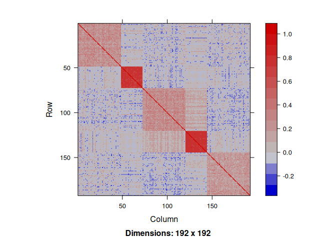
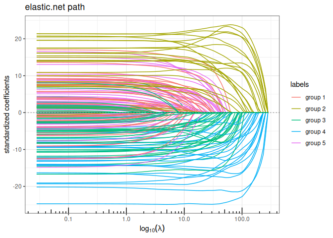
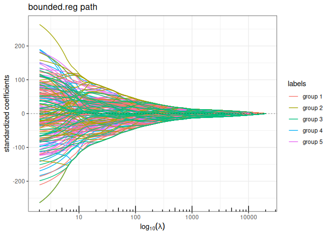
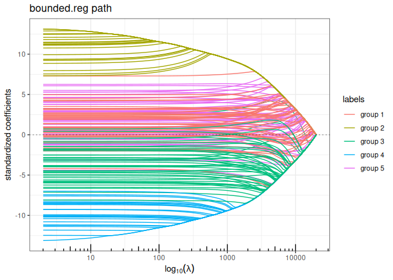
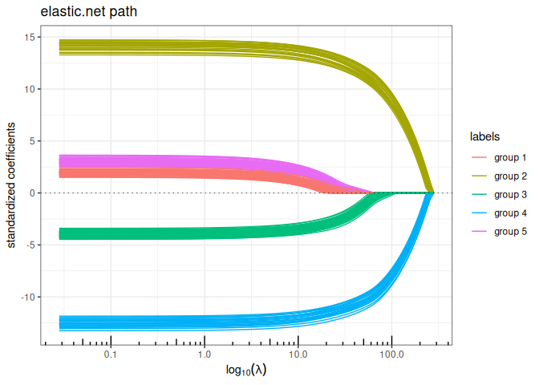
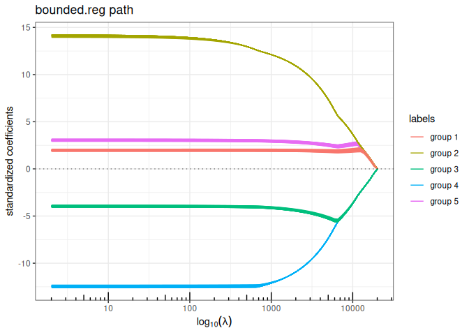

Description
Fits classical sparse regression models with efficient active set algorithms by solving quadratic problems. Also provides a few methods for model selection purpose (cross-validation, stability selection).
Installation
Many examples and demos can be found in the inst repositories. Here is a more illustrative one:
Example: structured penalized regression
This example is extracted form chapter 1 of my habilitation. You can get more insight by reading pages 65-66, 70-71.
Ok first load the package
----------------------------------------------
'quadrupen' package version 0.3-9xxx
Still under development... feedback welcome
----------------------------------------------A toy data set advocating for structured regularization
See pages 29–30 in my habilitation. Code for additional function is given by the end of the present document (Appendix).
We draw data from linear regression where the regression parameters are defined groupwise. The corresponding regression correlated according to the same pattern.
n <- 200
p <- 192
## model settings: block wise
mu <- 0
group <- c(p/4,p/8,p/4,p/8,p/4)
labels <- factor(rep(paste("group", 1:5), group))
beta <- rep(c(0.25,1,-0.25,-1,0.25), group)
x <- rPred.block(n, p, sizes = group, rho=c(0.25, 0.75, 0.25, 0.75, 0.25))Indeed, the correlation structure between the regressor exhibitis a strong pattern:

We draw the reponse variable by fixing the variance of the noise ratio to get an equal to .
dat <- rlm(x,beta,mu,r2=0.8)
y <- dat$y
sigma <- dat$sigmaRegularization without prior knowledge
No we try the available penalized regression method in quadrupen to fit the regularization path to this data set
Elastic-net ( penalty)
plot(elastic.net(x,y, lambda2=1, intercept=FALSE), labels=labels)
Bounded regression ( penalty)
plot(bounded.reg(x,y, lambda2=0, intercept=FALSE), labels=labels)
Ridge + Bounded regression ( penalty)
plot(bounded.reg(x,y, lambda2=5, intercept=FALSE), labels=labels)
Regularization with prior knowledge
Now let use define the graph associated with the groups of the regressor and compute the Graph Laplacian. We add a small value on the diagonal ton ensure strict positive definiteness (in he future, this matrix should preferentially be defined with a graph).
A <- Matrix::bdiag(lapply(group, function(s) matrix(1,s,s))) ; diag(A) <- 0
L <- -A; diag(L) <- Matrix::colSums(A) + 1e-2Now, we run all the method having a ridge-like regularization by replacing the ridge penalty $\| \code \|_2^2$ with $\| \code \|_{\mathbf{L}}^2$ to enforce some structure in the regularization: the solution paths look a lot more convincing.
Structured/Generalized Elastic-net ( penalty)
plot(elastic.net(x,y, struct = L, lambda2=1, intercept=FALSE), labels=labels)
Bounded regression + structured/Generalized Ridge ( penalty)
plot(bounded.reg(x,y, struct = L, lambda2=5, intercept=FALSE), labels=labels)
Appendix: functions for data generation
chol.uniform <- function(p,rho) {
q <- 0 ## sum_k^(i-1) c.k^2
cii <- 1 ## current value of the diagonal
c.i <- rho ## current value of the off-diagonal term
Cii <- cii ## vector of diagonal terms
C.i <- c.i ## vector of off-diagonal terms
for (i in 2:p) {
q <- q + c.i^2
cii <- sqrt(1-q)
c.i <- (rho-q)/cii
Cii <- c(Cii,cii)
C.i <- c(C.i,c.i)
}
return(list(cii=Cii, c.i=C.i[-p]))
}
rlm <- function(x,beta,mu=0,r2=NULL,sigma=1) {
n <- nrow(x)
if (!is.null(r2))
sigma <- as.numeric(sqrt((1-r2)/r2 * t(beta) %*% cov(x) %*% beta))
epsilon <- rnorm(n) * sigma
y <- mu + x %*% beta + epsilon
r2 <- 1 - sum(epsilon^2) / sum((y-mean(y))^2)
return(list(y=y,sigma=sigma))
}
## Blockwise structure
## the length of rho determine the number of blocs
## each group must be > 1 individual
rPred.block <- function(n, p, sizes=rmultinom(1,p,rep(p/K,K)), rho=rep(0.75,4)) {
K <- length(rho)
stopifnot(sum(sizes) == p | length(rho) != length(sizes))
Cs <- lapply(1:K, function(k) chol.uniform(sizes[k],rho[k]))
rmv <- function() {
return(
unlist(lapply(1:K, function(k) {
z <- rnorm(sizes[k])
Cs[[k]]$cii*z + c(0,cumsum(z[-sizes[k]]*Cs[[k]]$c.i))
}))
)
}
return(t(replicate(n, rmv(), simplify=TRUE)))
}